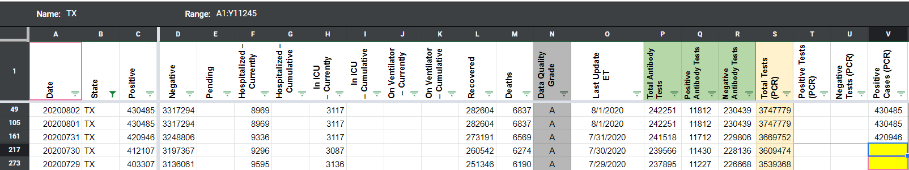
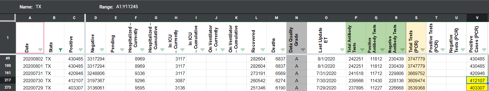
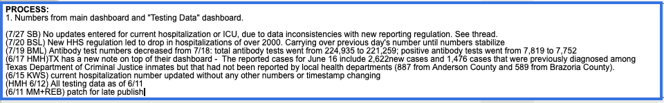
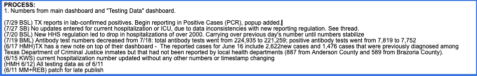
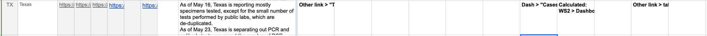
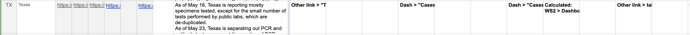
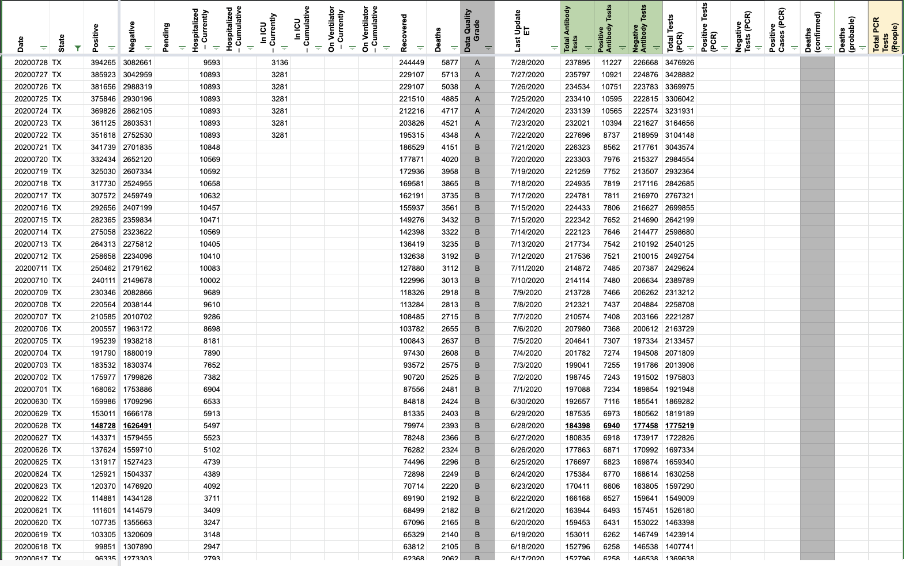
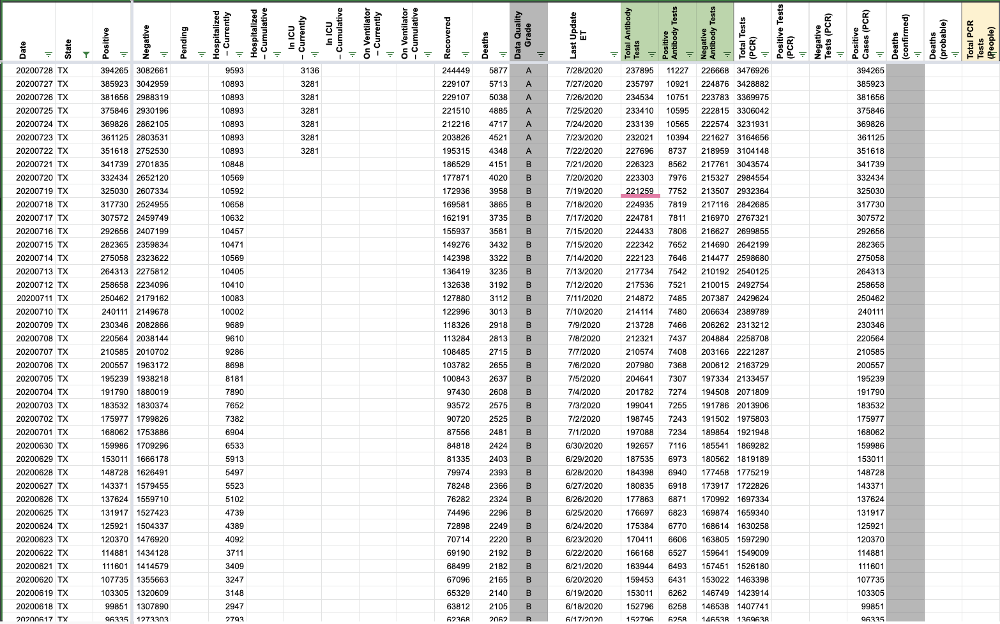

[TX] PCL Historicals
Issue number 692
brianskli opened this issue on July 29, 2020 at 9:27 am
State or US: Texas
Describe the problem TX does not explicitly say it reports in lab-confirmed, but it says that probables are not included. Positives are not being recorded in Positive Cases (PCR).
Link to data source https://txdshs.maps.arcgis.com/apps/opsdashboard/index.html#/ed483ecd702b4298ab01e8b9cafc8b83
Comments
the-daniel-lin commented on August 3, 2020 at 9:59 am
We found an unexplained gap in our Positive Cases (PCR) from 7/29-7/30. Filling it in here.
BEFORE: 
AFTER: 
Data was confirmed to be reported in lab-confirmed cases only.
Action items:
1/5 File private note in WS2 Before:  After: 
2/5 Change pop-up in State Matrix Before:  After: 
3/5 File GH issue
4/5 Copy over in States Daily Before:  After: 
5/5 File patch note form